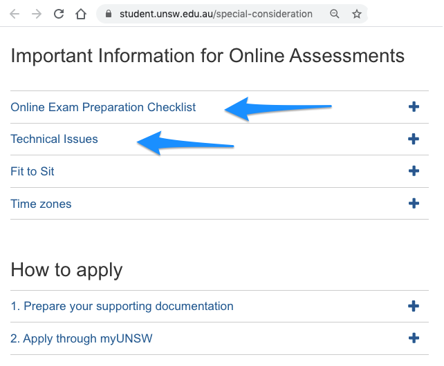

COMP2511 Sample Final Exam (20T3)
There are two parts,
- Part 1: Multiple Choice questions (16 marks).
- Part 2: Design/Programming Questions (24 marks).
- Start time
- The Final Exam will be available on the class webpage at 09:00am on the exam date (Tuesday 01/December/2020). You will need at most 3 hours to answer all the questions, and you can answer them anytime between 9am to 5pm on the exam day. You can use as many mins/hours as you wish between 9am and 5pm. However, make sure that you submit all your answers by the required due time, that is 5pm on the exam date.
- Deadline
- You must submit your answers by 5pm (after 8 hours) on the exam date (Tuesday 01/December/2020). If you don't submit your answers for your Final Exam, it will be considered as absent fail for the Final Exam.
- Resources
- During the Final Exam, you can (yes you can!) access the course material on the class web page, and also any other pages on the Internet! However, please make sure that you submit your original work and don't copy!
- Assessment
- We will award you marks for your final exam based on your submissions.
However, please make sure that you submit your original work and don't copy!
Notes:
- Answer all questions. Questions may not be worth equal marks. Questions may be answered in any order.
- All answers must be submitted online using the provided instructions in the respective questions.
- Please note that the topics covered in the final exam may be different to the topics covered in this sample exam. Also, the types/styles of questions and marks distribution across topics may also vary.
Important Information for Online Assessments
Before your final exam, you must read the section "Important Information for Online Assessments" available on the Special Consideration webpage. It offers information on what you should do if you experience a technical issue that is beyond your control and impacts on your ability to complete an assessment, and the other related topics. In particular, how and what to document for a special consideration application.

Please also read the check list provided by UNSW Student Services & Systems,
click here .
During the Exam
In case you have any queries during the exam, please send an email to
cs2511@cse.unsw.edu.au .
If there is a correction, we will post a notice on the class webpage. So please check your email and also check the class webpage for possible corrections (if any) during the exam period.
Part 1 (of 2): Multiple Choice (16 marks)
There will be approximately 12 to 16 multiple choice questions. The marks for each question may vary.
Part 1 uses Moodle Quiz module. You can attempt multiple times. Your final selections will be marked. Make sure to "Finish attempt" and also "Submit all and Finish".
Part 2 (of 2): Design/Programming Questions (24 marks)
There will be three or more questions in this part. You can use Vlab or your own machine. You need to submit your answer files using the provided instructions in the respective questions (using the provided give command or via WebCMS). All answers must be submitted online. Questions may not be worth equal marks.
Part 2: Q1
Given a problem specification, provide your OO design for a possible solution (similar to Ass1).
You need to provide the required:
- interfaces (with brief comments)
- classes (with brief comments) and
- method signatures (with brief comments)
For this question,
- you do NOT need to implement methods.
- you do NOT need to draw UML diagram(s).
You need to submit the required files using the provided give command or via WebCMS.
Once you are satisfied with your solution, submit it
via WebCMS. (click here)
OR
use the following
give command (from a vlab terminal),
$ give cs2511 part3Q1 *.java
Part 2: Q2
Given a problem specification,
implement a solution in Java.
For this question,
- you need to implement methods such that they properly use generics and follow
programming by contract, as discussed in the lectures.
- where suitable, you need to use a design pattern (one of the design patterns discussed in the course).
- your solution should pass the given Junit tests. If you don't properly
use generics, follow programming by contract and/or implement a suitable design pattern
as discussed in the lectures, you will not be awarded marks,
even if you pass Junit tests.
- you do NOT need to draw UML diagram(s).
You need to submit the required files using the provided give command or via WebCMS.
Once you are satisfied with your solution, submit it
via WebCMS. (click here)
OR
use the following
give command (from a vlab terminal),
$ give cs2511 part3Q2 part3Q2.java
Part 2: Q3
Given a problem specification, implement your solution
using a suitable design pattern (one of the design patterns discussed in the course).
You need to implement the required:
- interfaces
- classes
- methods
For this question,
- you need to design and implement interfaces, classes and methods such that your solution
pass the given Junit tests.
- importantly, if you don't properly use the required design pattern in your solution,
as discussed in the lectures, you will not be awarded marks,
even if you pass Junit tests.
- we will test your solution using extensive test cases (not provided in the question).
- you do NOT need to draw UML diagram(s).
You need to submit the required files using the provided give command or via WebCMS.
Once you are satisfied with your solution, submit it
via WebCMS. (click here)
OR
use the following
give command (from a vlab terminal),
$ give cs2511 part3Q3 part3Q3.java
And you may have more questions on other topics from the course.
End